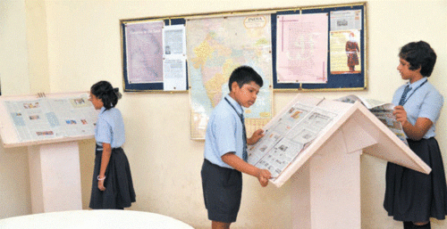
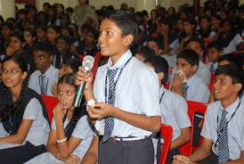
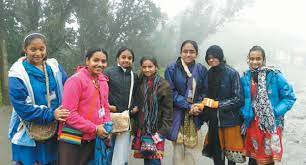

We, at SSM School, offer a 360-degree learning environment to its students and are rated as one of the best schools in Chennai. The school follows an integrated CBSE syllabus which is equipped with a micro-schedule that defines preparation on an hour-to-hour basis and acts as an added advantage to students. Further,our school follows the best and top teaching methodologies.
It is these set of international standards followed at SSM School that makes it amongst the Top CBSE Schools in Chennai.These methods offer the best possible foundation and assistance that help students perform exceptionally well in Olympiad and other competitive exams.
 At SSM, for the past 32 years, we have created a unique blend of world-class curricula, contemporary teaching methodologies, and equal focus on intellectual, physical and personality development, resulting future leaders who are ready to take on the world. Today, we stand as the force behind creating countless world-class doctors, engineers, IAS officers, chartered accountants, and so much more.
The taste of the healthy food provided by our school, makes the students forget the taste of the junk foods. The Educational tours and Field Trips will proivde the students with a small break from their hectic schedule,relaxes their minds and creates beautiful memories.
